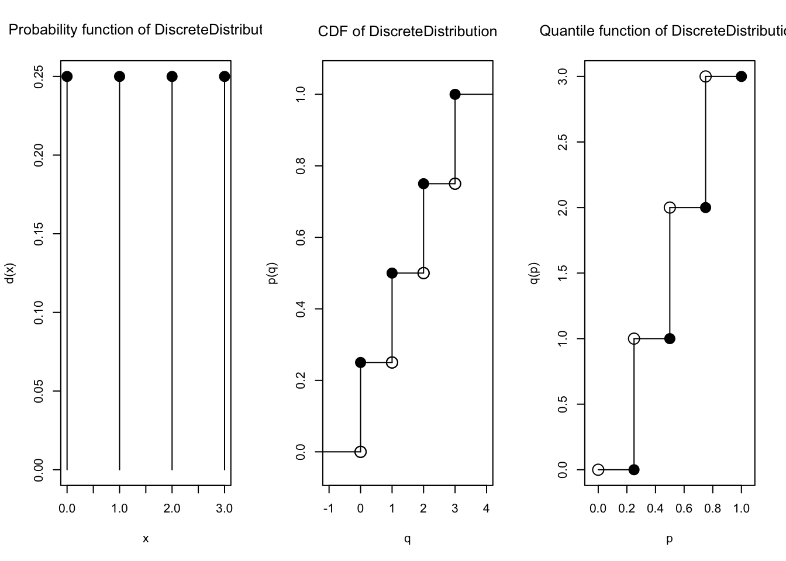
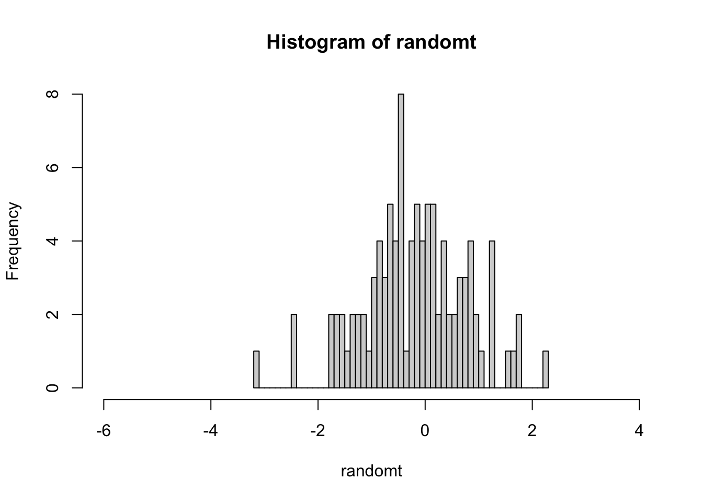

unif1 <- c(1:8)
unif1[1] 1 2 3 4 5 6 7 8Sampling Distributions in R
Kembali ke Pengantar Sains Data
Distribusi dari suatu statistik disebut sampling distribution atau distribusi sampling.
Contoh: distribusi dari rata-rata disebut distribusi sample mean. (Rata-rata termasuk statistik)
Misalkan kita punya suatu distribusi uniform diskrit
Akan dilakukan sampling dari distribusi tersebut
unif1 <- c(1:8)
unif1[1] 1 2 3 4 5 6 7 8Lihat sebarannya
mean(unif1)[1] 4.5sd(unif1)[1] 2.44949Variansi adalah kuadrat dari standard deviation:
sd(unif1)^2[1] 6hist(unif1, main = "Uniform Distribution", xlab = " ")
Misal diambil berbagai ukuran sampel dengan pengembalian
set.seed(211)Sample size 3, 1000 kali percobaan
sample_means <- c( )
for(i in 1:1000){
sample_means[i] <- mean(sample(8, 3, replace = T))
}
hist(sample_means, xlim = c(0,8), main = "Sample Size of 3", xlab = "Sample Means")
Sample size 10, 1000 kali percobaan
sample_means <- c( )
for(i in 1:1000){
sample_means[i] <- mean(sample(8, 10, replace = T))
}
hist(sample_means, xlim = c(0,8), main = "Sample Size of 10", xlab = "Sample Means")
Sample size 50, 1000 kali percobaan
sample_means <- c( )
for(i in 1:1000){
sample_means[i] <- mean(sample(8, 50, replace = TRUE))
}
hist(sample_means, xlim = c(0,8), main = "Sample Size of 50", xlab = "Sample Means")
Jika dilihat berdasarkan histogram dari ketiga sampling tadi, bisa terlihat bahwa semakin besar ukuran sampelnya, maka distribusi sample mean akan semakin mendekati distribusi normal
Daripada melakukan simulasi yang mengandalkan random, untuk ukuran sampel yang cukup kecil, kita bisa saja melihat semua kemungkinan pengambilan sampel, menghitung statistiknya (misalnya di sini statistik rata-rata), lalu mmenghitung probabilitasnya, untuk memperoleh distribusi sampling untuk statistik tersebut (misalnya di sini distribusi sample mean) secara eksak.
Mari kita coba untuk distribusi diskrit berhingga, yang misalnya bisa kita buat sendiri, memanfaatkan package distr yang sudah kita kenal sebelumnya.
library("distr")Loading required package: startupmsgUtilities for Start-Up Messages (version 0.9.7)For more information see ?"startupmsg", NEWS("startupmsg")Loading required package: sfsmiscObject Oriented Implementation of Distributions (version 2.9.2)Attention: Arithmetics on distribution objects are understood as operations on corresponding random variables (r.v.s); see distrARITH().
Some functions from package 'stats' are intentionally masked ---see distrMASK().
Note that global options are controlled by distroptions() ---c.f. ?"distroptions".For more information see ?"distr", NEWS("distr"), as well as
http://distr.r-forge.r-project.org/
Package "distrDoc" provides a vignette to this package as well as to several extension packages; try vignette("distr").
Attaching package: 'distr'The following objects are masked from 'package:stats':
df, qqplot, sdKita akan meninjau semua kemungkinan pengambilan dua sampel dengan pengembalian. Untuk itu, kita memerlukan package gtools yang menyediakan fungsi-fungsi kombinatorik seperti permutations dan combinations untuk memperoleh semua kemungkinan seperti itu
install.packages("gtools")library("gtools")Misalkan kita punya distribusi diskrit sebagai berikut:
supp1 <- c(0, 1, 2, 3)
prob1 <- c(1/4, 1/4, 1/4, 1/4)
dist1 <- DiscreteDistribution(supp = supp1,
prob = prob1)
plot(dist1)
(Sebenarnya dist1 juga bisa berupa distribusi Bernoulli, binomial, ataupun distribusi diskrit lainnya.)
Kita bisa menghasilkan semua kemungkinan sampel berukuran 2 dengan pengembalian, menggunakan fungsi permutations dari package gtools, sebagai berikut:
mat1 <- permutations(n = length(support(dist1)),
r = 2, # ukuran sampel
v = support(dist1),
repeats.allowed = TRUE)
mat1 [,1] [,2]
[1,] 0 0
[2,] 0 1
[3,] 0 2
[4,] 0 3
[5,] 1 0
[6,] 1 1
[7,] 1 2
[8,] 1 3
[9,] 2 0
[10,] 2 1
[11,] 2 2
[12,] 2 3
[13,] 3 0
[14,] 3 1
[15,] 3 2
[16,] 3 3Hasilnya berupa matriks, yang bisa kita ubah jadi data frame,
df_perm1 <- data.frame(mat1)
df_perm1 X1 X2
1 0 0
2 0 1
3 0 2
4 0 3
5 1 0
6 1 1
7 1 2
8 1 3
9 2 0
10 2 1
11 2 2
12 2 3
13 3 0
14 3 1
15 3 2
16 3 3Kemudian, kita ingin menghitung rata-rata dari tiap kemungkinan dua sampel. Kita bisa apply atau menerapkan fungsi statistik yang kita inginkan, misalnya mean atau rata-rata, untuk tiap baris di matriks mat1, sebagai berikut
apply(mat1, 1, mean) [1] 0.0 0.5 1.0 1.5 0.5 1.0 1.5 2.0 1.0 1.5 2.0 2.5 1.5 2.0 2.5 3.0Hasilnya bisa kita simpan sebagai kolom baru di data frame, misal kolom Xbar
df_perm1["Xbar"] <- apply(mat1, 1, mean)
df_perm1 X1 X2 Xbar
1 0 0 0.0
2 0 1 0.5
3 0 2 1.0
4 0 3 1.5
5 1 0 0.5
6 1 1 1.0
7 1 2 1.5
8 1 3 2.0
9 2 0 1.0
10 2 1 1.5
11 2 2 2.0
12 2 3 2.5
13 3 0 1.5
14 3 1 2.0
15 3 2 2.5
16 3 3 3.0Sekarang, df_perm1 menyimpan semua kemungkinan sampel berukuran 2 dengan pengembalian yang mungkin, disertai rata-rata masing-masing.
Selanjutnya, kita perlu menghitung probabilitas dari tiap kemungkinan sampel. Perhatikan bahwa, karena sampling dilakukan dengan pengembalian, probabilitas antar tiap pengambilan bersifat independen. Sehingga, kita tinggal mengalikan probabilitas untuk masing-masing pengambilan.
Caranya, kita bisa menghitung probabilitas masing-masing pengambilan (membuat matriks baru, misal mat1_prob), baru melakukan perkalian per baris.
Karena distribusi dist1 tergolong diskrit, kita bisa menerapkan PMFnya yaitu fungsi d
d(dist1)(mat1) [1] 0.25 0.25 0.25 0.25 0.25 0.25 0.25 0.25 0.25 0.25 0.25 0.25 0.25 0.25 0.25
[16] 0.25 0.25 0.25 0.25 0.25 0.25 0.25 0.25 0.25 0.25 0.25 0.25 0.25 0.25 0.25
[31] 0.25 0.25Waduh, hasilnya malah flat, daripada berbentuk matriks. Agar tetap berbentuk matriks, kita gunakan fungsi apply lagi, sebagai berikut
mat1_prob <- apply(mat1, 1:2, d(dist1))
mat1_prob [,1] [,2]
[1,] 0.25 0.25
[2,] 0.25 0.25
[3,] 0.25 0.25
[4,] 0.25 0.25
[5,] 0.25 0.25
[6,] 0.25 0.25
[7,] 0.25 0.25
[8,] 0.25 0.25
[9,] 0.25 0.25
[10,] 0.25 0.25
[11,] 0.25 0.25
[12,] 0.25 0.25
[13,] 0.25 0.25
[14,] 0.25 0.25
[15,] 0.25 0.25
[16,] 0.25 0.25Sekarang kita tinggal mengalikan tiap baris (dengan apply lagi), dan menyimpan hasilnya sebagai kolom baru di data frame, misal prob
df_perm1["prob"] <- apply(mat1_prob, 1, prod)
df_perm1 X1 X2 Xbar prob
1 0 0 0.0 0.0625
2 0 1 0.5 0.0625
3 0 2 1.0 0.0625
4 0 3 1.5 0.0625
5 1 0 0.5 0.0625
6 1 1 1.0 0.0625
7 1 2 1.5 0.0625
8 1 3 2.0 0.0625
9 2 0 1.0 0.0625
10 2 1 1.5 0.0625
11 2 2 2.0 0.0625
12 2 3 2.5 0.0625
13 3 0 1.5 0.0625
14 3 1 2.0 0.0625
15 3 2 2.5 0.0625
16 3 3 3.0 0.0625Kini, tiap kemungkinan sampel berukuran 2 dengan pengembalian sudah disertai rata-rata dan probabilitas. Untuk memperoleh tabel (PMF untuk) distribusi sample mean, kita tinggal melakukan “pengelompokkan” data untuk tiap nilai statistiknya yaitu Xbar atau rata-rata, sembari menjumlahkan probabilitas. Caranya bisa dengan kode seperti berikut
Xbar_prob1 <- aggregate(prob ~ Xbar,
data = df_perm1,
sum)
Xbar_prob1 Xbar prob
1 0.0 0.0625
2 0.5 0.1250
3 1.0 0.1875
4 1.5 0.2500
5 2.0 0.1875
6 2.5 0.1250
7 3.0 0.0625Xbar_prob1 adalah tabel PMF dari sample mean, yang telah diperoleh secara eksak. Mari kita visualisasikan distribusi sample mean tersebut menggunakan histogram, tetapi dengan fungsi barplot agar tiap nilai rata-rata memiliki bar tersendiri
barplot(height = Xbar_prob1[["prob"]],
names.arg = Xbar_prob1[["Xbar"]],
ylim = c(0, 5/16),
yaxp = c(0, 5/16, 5))
Whew! Perhatikan bahwa, untuk sampel berukuran 2, ternyata kemungkinannya cukup banyak. Lihat kembali dimensi dari mat1 yaitu matriks berisi semua kemungkinan sampel berukuran 2 dengan pengembalian:
dim(mat1)[1] 16 2Banyaknya baris bisa sampai 16 ini dihasilkan dari rumus banyaknya permutasi dengan pengulangan (permutations with repition), yaitu
\[n^r = 4^2 = 16\]
4^2[1] 16Dengan 4 adalah ukuran support di distribusi asalnya, dan 2 adalah ukuran sampel. Ini masih contoh kecil.
Bayangkan apabila ukuran sampelnya besar. Maka banyaknya kemungkinan pengambilan menjadi amat sangat banyak. Terlalu banyak, sehingga lebih baik kita lakukan suatu penghampiran daripada langsung menghitung distribusi sample mean secara eksak.
Untuk itu, perhatikan dalil-dalil berikut.
Dalil 1
Apabila sampel acak berukuran n diambil dengan pengembalian dari populasi berhingga yang berukuran \(N\), dimana populasi tersebut mempunyai mean \(\mu\) dan variansi \(\sigma^2\) , maka untuk \(n\) yang besar, distribusi dari mean sampel \(\bar{X}\) akan mendekati distribusi normal dengan mean \(\mu_\bar{X} = \mu\) dan \(\sigma\bar{X}^2 = \frac{\sigma^2}{n}\). Dengan demikian \[Z = \frac{\bar{X} - \mu}{\frac{\sigma}{\sqrt{n}}} \; \text{mendekati} \; N(0,1)\]
Catatan: Dalil 1 berlaku untuk populasi berhingga dengan ukuran sampel \(\mathbf{n \geq 30}\). Dalil 1 berlaku untuk \(n < 30\) apabila distribusi dari populasinya tidak terlalu menyimpang dari distribusi normal.
Contoh
Misalkan diberikan populasi 1,1,1,3,4,5,6,6,6,7 dan misalkan diambil sampel acak berukuran 36 dari populasi tersebut dengan pengembalian. Tentukan probabilitas bahwa nilai rata-rata sampelnya antara 3.85 dan 4.45 !
data1 <- c(1, 1, 1, 3, 4, 5, 6, 6, 6, 7,8,8)Kita hitung statistiknya
mean1 <- mean(data1)
sd1 <- sd(data1)Sekarang kita hitung probabilitasnya
n <- 36
probability <-
pnorm(4.45,
mean = mean1,
sd = sd1/sqrt(n)) -
pnorm(3.85,
mean = mean1,
sd = sd1/sqrt(n))
probability[1] 0.2794876Atau bisa kita ubah ke normal standar terlebih dahulu
n <- 36
standard_error <- sd1 / sqrt(n)
lower_bound <- 3.85
upper_bound <- 4.45
z_lower <- (lower_bound - mean1) / standard_error
z_upper <- (upper_bound - mean1) / standard_error
probability <- pnorm(z_upper) - pnorm(z_lower)
probability[1] 0.2794876Lalu bagaimana dengan tanpa pengembalian? Misalkan kita punya suatu distribusi uniform
unif2 <- c(1:50)
unif2 [1] 1 2 3 4 5 6 7 8 9 10 11 12 13 14 15 16 17 18 19 20 21 22 23 24 25
[26] 26 27 28 29 30 31 32 33 34 35 36 37 38 39 40 41 42 43 44 45 46 47 48 49 50Lihat sebarannya
mean(unif2)[1] 25.5sd(unif2)[1] 14.57738hist(unif2, main = "Uniform Distribution", xlab = " ")
Sample size 30, 1000 kali percobaan
sample_means <- c( )
for(i in 1:1000){
sample_means[i] <- mean(sample(50, 30, replace = FALSE))
}
hist(sample_means, main = "Sample Size of 50", xlab = "Sample Means")
Dapat terlihat juga bahwa bentuk distribusinya mirip dengan distribusi normal! Akan tetapi, formula yang digunakannya berbeda, ingat dalil 2!
Dalil 2 Apabila sampel acak berukuran n diambil secara acak tanpa pengembalian dari suatu populasi berhingga berukuran \(N\), dimana populasi tersebut memiliki mean \(\mu\) dan variansi \(\sigma^2\), maka distribusi probabilitas \(\bar{X}\) akan menghampiri normal dengan \(\mu_\bar{X} = \mu\) dan \(\sigma^2 = \frac{\sigma^2(N-n)}{n(N-1)}\)
Catatan: lagi-lagi, ada syarat \(n \geq 30\)
Secara umum, jika sampel yang diambil sangat besar (yaitu \(n \geq 30\)) maka bisa digunakan CLT atau Central Limit Theorem, juga disebut Dalil Limit Pusat
Semakin besar sampel yang diambil, distribusi sample mean makin mendekati distribusi normal \(N(\mu, \sigma^2)\), dengan
\[\mu_\bar{X} \approx \mu\]
\[\sigma_\bar{X}^2 \approx \frac{\sigma^2}{n}\]
Bagaimanapun bentuk distribusi aslinya, apabila \(n \geq 30\), distribusi normal di atas akan mendekati distribusi sample mean dengan sangat baik
Sebuah perusahaan memproduksi bohlam. Bila umur bohlam itu menyebar normal dengan mean 800 jam dan standar deviasi 40 jam, hitunglah peluang bahwa suatu sampel acak 16 bohlam akan mempunyai umur rata-rata kurang dari 775 jam.
Jawab: misalkan \(X\) adalah variabel acak untuk umur bohlam. Diminta
\[\text{Pr}(X < 775)\]
yaitu nilai CDF di 775.
n <- 16
mean2 <- 800
sd2 <- 40 / sqrt(n)
pnorm(775, mean = mean2, sd = sd2)[1] 0.006209665Atau jika ingin diubah ke dalam normal standar terlebih dahulu,
x = (775-mean2) / sd2
pnorm(x) # otomatis mean=0, sd=1[1] 0.006209665transformasi data random menjadi normal standar (berlaku untuk distribusi kontinu apapun -> sampling dist.) gunakan CLT -> scale
set.seed(101)
n <- 100
random <- rnorm(n, mean = 10, sd = 8)
par(mfrow = c(1,2))
plot(density(random), main = "Sebelum")
plot(density(scale(random)), main = "Sesudah")
Misalkan diberikan populasi 1,1,1,3,4,5,6,6,6,7 dan misalkan diambil sampel acak berukuran 36 dari populasi tersebut dengan pengembalian. Tentukan probabilitas bahwa nilai rata-rata sampelnya antara 3.85 dan 4.45 !
data1 <- c(1, 1, 1, 3, 4, 5, 6, 6, 6, 7)
mean1 <- mean(data1)
sd1 <- sd(data1)
n <- 36
standard_error <- sd1 / sqrt(n)
lower_bound <- 3.85
upper_bound <- 4.45
z_lower <- (lower_bound - mean1) / standard_error
z_upper <- (upper_bound - mean1) / standard_error
probability <- pnorm(z_upper) - pnorm(z_lower)
probability[1] 0.5227107Distribusi-t digunakan saat \(n < 30\) (sehingga tidak bisa menggunakan CLT) dan variansi populasi tidak diketahui (yang ada hanyalah variasi sampel, misal \(S^2\)), sesuai dalil 3 berikut
Apabila \(\bar{x}\) dan \(S^2\) masing-masing adalah nilai mean dan nilai variansi dari sampel berukuran \(n\), yang diambil dari suatu populasi nrmal dengan mean \(\mu\) (yang diketahui) dan variansi \(\sigma^2\) (yang tidak diketahui), maka kita bisa misalkan
\[t = \frac{\bar{x} - \mu}{\left( \frac{S}{\sqrt{n}} \right)}\]
dan \(t\) ini merupakan sebuah nilai dari variabel acak \(T\) yang mempunyai distribusi \(t\) dengan (parameter) derajat bebas \(v = n-1\).
Distribusi-t adalah distribusi kontinu yang memiliki PDF dan CDF, sebagaimana distribusi kontinu pada umumnya, sehingga untuknya tersedia fungsi-fungsi d…, p…, q…, dan r… yang biasa kita kenal.
Distribusi-t memiliki satu parameter saja, yaitu degrees of freedom atau derajat bebas, yang dilambangkan df di R.
dt(x = 0.5, df = 14)[1] 0.3431707pt(0.025, df = 14) [1] 0.5097961Pr(T<t)=0.05 (alpha) -> nyari t nya (t-table)
qt(.95, df = 20)[1] 1.724718set.seed(121)
n <- 100
randomt <- rt(n, df = 20)
hist(randomt, breaks=50, xlim = c(-6, 4))
Contoh
Tentukan nilai \(k\) sedemikian sehingga
\[\text{Pr}(k < T < -1.761) = 0.045\]
dari suatu sampel acak berukuran 15 diambil dari suatu populasi normal
Jawab:
Sesuai Dalil 3, parameter derajat bebas yang digunakan adalah
\[v = n-1 = 15-1 = 14\]
prob <- 0.045
atas <- pt(-1.716, df = 14)
bawah <- atas - prob
k <- qt(bawah, df = 14)
k[1] -2.672883Misalkan kita punya dua populasi (bisa sama ataupun berbeda), yang masing-masing dibuat distribusi sample mean nya, dan kita ingin melihat bagaimana selisih antara kedua distribusi tersebut. Secara tidak langsung, kita bisa melihat seberapa berbeda rata-rata antar kedua populasi, bagaimana persebaran bedanya.
Misalkan
sampel acak berukuran \(n_1\) diambil secara acak dari populasi berukuran besar (tak hingga), misal Populasi I, dengan mean \(\mu_1\) dan variansi \(\sigma_1^2\).
sampel acak berukuran \(n_2\) diambil secara acak dari populasi berukuran besar (tak hingga), misal Populasi II, dengan mean \(\mu_2\) dan variansi \(\sigma_2^2\).
Populasi I dan Populasi II saling bebas.
Maka beda dua mean dari sampel, yaitu \(\bar{X}_1 - \bar{X}_2\), akan menyebar menghampiri normal dengan mean \(\mu_{\bar{X}_1 - \bar{X}_2} = \mu_1 - \mu_2\) dan variansi \(\sigma_{\bar{X}_1 - \bar{X}_2}^2 = \frac{\sigma_1^2}{n_1} + \frac{\sigma_2^2}{n_2}\)
Dengan demikian, misalkan
\[z= \frac{\left( \bar{x}_1 - \bar{x}_2 \right) - \left( \mu_1 - \mu_2 \right)}{\sqrt{\frac{\sigma_1^2}{n_1} + \frac{\sigma_2^2}{n_2}}}\]
maka \(z\) merupakan nilai dari variabel acak normal standar \(Z\).
Catatan:
Distribusi tiap populasi tidak harus normal.
Apabila \(n_1 \geq 30\) dan \(n_2 \geq 30\), maka distribusi \(\bar{X}_1 - \bar{X}_2\) mendekati distribusi normal dengan sangat baik
Contoh:
Sebuah sampel acak berukuran \(n_1 = 5\) diambil secara acak dari sebuah populasi yang menyebar normal dengan nilai mean \(\mu_1 = 50\) dan \(\sigma_1^2 = 9\) dan diperoleh nilai mean sample nya \(\bar{x}_1\).
Sebuah sampel acak kedua berukuran \(n_2 = 4\), bebas dengan sampel acak pertama, diambil dari populasi lain yang jaga menyebar normal dengan nilai mean \(\mu_2 = 40\) dan \(\sigma_1^2 = 4\) dan diperoleh nilai mean sample nya \(\bar{x}_2\).
Hitung:
\[\text{Pr}\left( \left(\bar{X}_1 - \bar{X}_2\right) < 8.2 \right)\]
Jawab:
Karena Populasi I dan Populasi II berdistribusi normal, walaupun \(n_1\) dan \(n_2\) berukuran kecil, maka \(\bar{X}_1 - \bar{X}_2\) juga berdistribusi normal.
(Kombinasi linear dari distribusi normal juga berupa distribusi normal.)
Mean dari \(\bar{X}_1 - \bar{X}_2\) adalah:
\[\begin{align*} \mu_{\bar{X}_1 - \bar{X}_2} &= \mu_1 - \mu_2 \\ &= 50 - 40 = 10 \end{align*}\]
dan variansinya adalah:
\[\begin{align*} \sigma_{\bar{X}_1 - \bar{X}_2}^2 &= \frac{\sigma_1^2}{n_1} + \frac{\sigma_2^2}{n_2} \\ &= \frac{9}{5} + \frac{4}{4} &= 2.8 \end{align*}\]
Jadi,
\[\begin{align*} \text{Pr}&\left( \left(\bar{X}_1 - \bar{X}_2\right) < 8.2 \right) \\ &= \text{Pr}\left( \frac{\left(\bar{X}_1 - \bar{X}_2\right) - 10}{\sqrt{2.8}} < \frac{8.2 - 10}{\sqrt{2.8}} \right) \\ &= \text{Pr}\left( Z < \frac{8.2 - 10}{\sqrt{2.8}} \right) \end{align*}\]
pnorm( (8.2-10)/sqrt(2.8) ) # otomatis mean=0, sd=1[1] 0.1410294Maka \[\begin{align*} \text{Pr}&\left( \left(\bar{X}_1 - \bar{X}_2\right) < 8.2 \right) \\ &= \text{Pr}\left( Z < \frac{8.2 - 10}{\sqrt{2.8}} \right) \\ &\approx 0.1410294 \end{align*}\]
Kesimpulannya, \[\begin{align*} \text{Pr}&\left( \left(\bar{X}_1 - \bar{X}_2\right) < 8.2 \right) \\ &\approx 0.1410294 \end{align*}\]